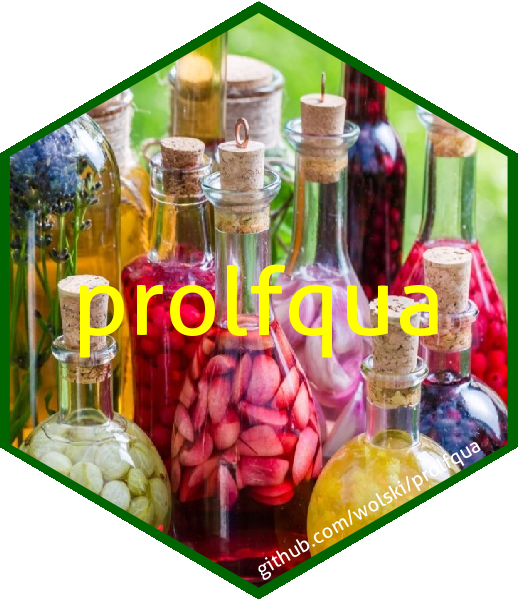
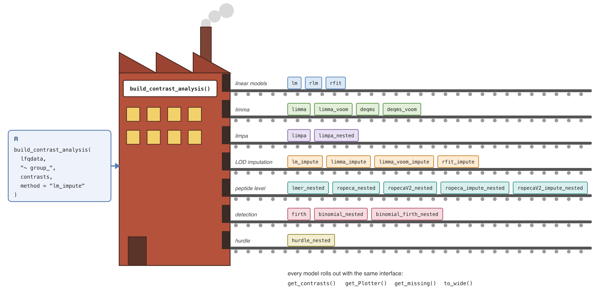
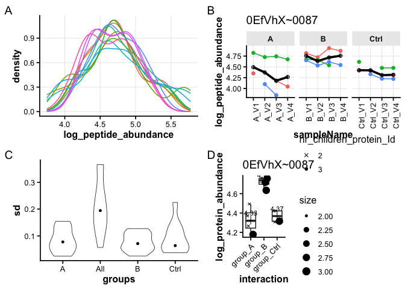
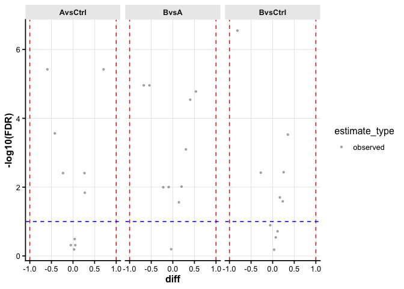

The R package contains functions for analysing mass spectrometry based experiments. It is intended for proteomics core facilities and researchers who analyse label-free protein or peptide intensities quantified with MaxQuant, DIA-NN, Spectronaut, FragPipe or similar software. This package is developed at the FGCZ. The package documentation including vignettes can be accessed at https://fgcz.github.io/prolfqua/index.html
prolfqua makes easy things easy while remaining fully hackable.
At its centre is a factory, build_contrast_analysis(): one call fits a model per protein and computes the requested contrasts. The method argument selects one of 20 models, and every model returns its results through the same interface. Start with the Introduction to prolfqua.

Statement of need
Label-free quantification (LFQ) experiments measure thousands of proteins or peptides in few samples, and values go missing more often at low intensity. Methods for their differential expression analysis are spread over packages with different input formats, model specifications and outputs (limma, DEqMS, MSstats, msqrob2, proDA, limpa), which makes it hard to choose a method for a dataset or to compare methods on it.
prolfqua gives these methods one data model, a long table with an AnalysisConfiguration naming the column roles; one model specification, R’s formula interface including mixed models; and one output format. build_contrast_analysis() fits any of its 20 methods and returns contrasts with the same columns, so a core facility can run, compare and report them in one workflow, and a researcher can check how much a result depends on the method. prolfqua also covers the steps around the test: quality control, normalisation, aggregation of peptides to proteins and sample-size estimation.
How to install prolfqua?
prolfqua requires R (>= 4.6); check your version with R.version.string and update R first if needed.
prolfqua is part of Bioconductor from release 3.24. To install the Bioconductor release:
if (!requireNamespace("BiocManager", quietly = TRUE)) {
install.packages("BiocManager")
}
BiocManager::install("prolfqua")If BiocManager reports that prolfqua is not available for your Bioconductor version, update Bioconductor with BiocManager::install(version = "3.24") and run BiocManager::install("prolfqua") again.
Bioconductor publishes a release every six months. The development version on GitHub has the changes made since then, listed in the changelog. Installing it from GitHub needs the remotes package:
install.packages(c("BiocManager", "remotes"))
BiocManager::install("fgcz/prolfqua")packageVersion("prolfqua") shows which version you have installed.
Some methods and plots use packages listed under Suggests; prolfqua asks to install them when they are needed.
Let us please know about any installation problems or errors when using the package: https://github.com/fgcz/prolfqua/issues
How to get started
How to build a LFQData object from a table with protein or peptide quantification results, and a table with sample annotation is described in more detail in the Importing your data vignette.
A minimal example for a table with protein abundances is:
# Table with abundances
df <- data.frame(
protein_Id = c("tr|A|HUMAN", "tr|B|HUMAN", "tr|C|HUMAN", "tr|D|HUMAN"),
Intensity_A = c(100, 10000, 10, NA),
Intensity_B = c(NA, 9000, 20, 100),
Intensity_C = c(200, 8000, NA, 150),
Intensity_D = c(130, 11000, 50, 50)
)
# Table with sample annotation
annot <- data.frame(
Sample = c("Intensity_A", "Intensity_B", "Intensity_C", "Intensity_D"),
Group = c("A", "A", "B", "C")
)
# convert into long format
table_long <- tidyr::pivot_longer(df, dplyr::starts_with("Intensity_"), names_to = "Sample", values_to = "Intensity")
table_long <- dplyr::inner_join(annot, table_long, by = "Sample")
# peptides per protein and sample; used as weights by some methods (1 if unknown)
table_long$nr_children <- 1L
# create the AnalysisConfiguration
config <- prolfqua::AnalysisConfiguration$new()
config$file_name <- "Sample"
config$work_intensity <- "Intensity"
config$hierarchy[["protein_Id"]] <- "protein_Id"
config$factors[["Group"]] <- "Group"
# Build LFQData object
analysis_data <- prolfqua::setup_analysis(table_long, config)
#> creating sampleName from file_name column
#> no qValue column specified in the data. Creating column qValue and setting qValues to 0.
lfqdata <- prolfqua::LFQData$new(analysis_data, config)
lfqdata$hierarchy_counts()
#> # A tibble: 1 × 1
#> protein_Id
#> <int>
#> 1 4Once you have created an LFQData you can use prolfqua like this.
library(prolfqua)
## here we simulate peptide level data
startdata <- sim_lfq_data_peptide_config()
lfqpep <- LFQData$new(startdata$data, startdata$config)
## transform intensities and aggregate peptides to proteins
lfqpep <- lfqpep$get_Transformer()$log2()$robscale()$lfq
lfqpep$rename_response("log_peptide_abundance")
agr <- lfqpep$get_Aggregator()
lfqpro <- agr$aggregate()
lfqpro$rename_response("log_protein_abundance")
## plot Figure 3 panels A-D
pl <- lfqpep$get_Plotter()
panelA <- pl$intensity_distribution_density() +
ggplot2::labs(tag = "A") + ggplot2::theme(legend.position = "none")
panelB <- agr$plot()$plots[[1]] + ggplot2::labs(tag = "B")
panelC <- lfqpro$get_Stats()$violin() + ggplot2::labs(tag = "C")
pl <- lfqpro$get_Plotter()
panelD <- pl$boxplots()$boxplot[[1]] + ggplot2::labs(tag = "D")
gridExtra::grid.arrange(panelA, panelB, panelC, panelD)
## specify contrasts
Contr <- c(
"AvsCtrl" = "group_A - group_Ctrl",
"BvsCtrl" = "group_B - group_Ctrl",
"BvsA" = "group_B - group_A"
)
## fit a model per protein and compute the contrasts, here with limma
fa <- build_contrast_analysis(lfqpro, "~ group_", Contr, method = "limma")
#> fit (limma): 4 missing responses dropped (e.g. 7cbcrd~5725, 9VUkAq~4703, CGzoYe~2147): NA response (missing observation) left out of the fit
#> See $provenance().
head(fa$get_contrasts())
#> # A tibble: 6 × 16
#> modelName estimate_type protein_Id contrast diff FDR
#> <chr> <chr> <chr> <chr> <dbl> <dbl>
#> 1 limma observed 0EfVhX~0087 AvsCtrl -0.0506 0.485
#> 2 limma observed 7cbcrd~5725 AvsCtrl 0.707 0.00000378
#> 3 limma observed 9VUkAq~4703 AvsCtrl -0.593 0.00000378
#> 4 limma observed BEJI92~5282 AvsCtrl 0.273 0.0146
#> 5 limma observed CGzoYe~2147 AvsCtrl -0.231 0.00391
#> 6 limma observed DoWup2~5896 AvsCtrl 0.266 0.00391
#> # ℹ 10 more variables: std.error.unmoderated <dbl>, df.unmoderated <dbl>,
#> # std.error <dbl>, statistic <dbl>, p.value <dbl>, sigma <dbl>, df <dbl>,
#> # conf.low <dbl>, conf.high <dbl>, avgAbd <dbl>
## volcano plot
fa$get_Plotter()$volcano()$FDR
Detailed documentation with R code
Documents explaining how to run an analysis with prolfqua are at https://fgcz.github.io/prolfqua/index.html.
- Introduction to prolfqua
- Importing your data
- Comparing two groups
- All modelling methods at a glance
- Two-factor designs
- Contrasts from factors
- Filling the gaps: model-based imputation for heatmaps and PCA
- QC and sample size estimation
- Transforming and calibrating LFQ data

- Watch the in silico talk
- See our article at the Journal of Proteome Research
- See Bioconductor 2021 Conference poster.
- Watch the lightning (8 min) talk at EuroBioc2020 on YouTube or slides.
Design
The package for proteomics label free quantification prolfqua (read: prolevka) evolved from scripts written at the FGCZ to visualise and analyse mass spectrometry data; some of them are still in the R packages quantable, protViz and imsbInfer.
prolfqua stores the data in one table in long format, with an AnalysisConfiguration naming the column roles: the hierarchy (for example protein and peptide), the explanatory factors, the sample and the response. Data in long format, as written by Spectronaut, Skyline or DIA-NN, needs only this configuration; wide matrices, as written by MaxQuant, are converted with lfqdata_from_wide(), and the prolfquapp package reads the output of common quantification software. Results are data frames, so dplyr and ggplot2 work on every step.
Models are specified with R’s formula interface, including lme4 formulas for mixed models, so parallel, factorial and repeated-measurement designs need no special code. On top of the model fits, prolfqua implements p-value moderation as in limma, the peptide-median aggregation of PECA and ROPECA, and refits at the limit of detection for groups without observations, which makes these methods comparable within one framework. Besides differential expression, prolfqua computes coefficients of variation, estimates sample sizes, summarises missing values and intensity distributions, aggregates peptides to proteins (top N, Tukey’s median polish, robust regression) and compares models with likelihood ratio tests.
To use prolfqua, knowledge of R’s regression model infrastructure is an advantage.
Related projects
- prolfquabenchmark - a package to document the performance of prolfqua, MSstats, msqrob2, and proDA. See documentation: https://prolfqua.github.io/prolfquabenchmark/
- prolfquapp: Generating Dynamic DEA Reports with the prolfqua R Package https://github.com/prolfqua/prolfquapp
- prophosqua - (scripts for the analysis of phospho experiments) https://github.com/prolfqua/prophosqua
Related packages
-
limma and DEqMS: moderated t-tests on a protein matrix; prolfqua’s
limma,limma_voomanddeqmsmethods call them -
limpa: detection probability curve and precision weights; prolfqua’s
limpamethods call it -
PECA: peptide-median aggregation (PECA, ROPECA); prolfqua’s
ropeca_nestedis derived from it - MSstats: protein summarisation and linear mixed models
- msqrob2: robust ridge regression on peptide or protein level, built on QFeatures
- proDA: probabilistic dropout model, inference without imputation
- DAPAR and DAPARdata: imputation and statistical analysis behind the Prostar interface
- Triqler: Bayesian error propagation from identification to quantification (Python)
R packages to compute contrasts from linear and other models
- marginaleffects Compute and plot predictions, slopes, marginal means, and comparisons (contrasts, risk ratios, odds ratios, etc.) for over 70 classes of statistical models in R.
- emmeans Obtain estimated marginal means (EMMs) for many linear, generalized linear, and mixed models.
- lmerTest computes contrast for lme4 models
- multcomp computes contrast for linear models and adjusts p-values (multiple comparison)
How to cite?
Please cite the prolfqua article in the Journal of Proteome Research. citation("prolfqua") gives the reference as text and as BibTeX.
Code of Conduct
Please note that this package is released with a Contributor Code of Conduct. By contributing to this project, you agree to abide by its terms.